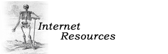

|

LISTSERVS For subscription information please email the list moderator/administrator:
- ALHHS-L (Archivists and Librarians in the History of the Health Sciences) --
Administrator: Russell Johnson (rjohnson AT library.ucla.edu)
[about ALHHS-L]
- CADUCEUS-L (History of Medicine and Its Allied Sciences) --
Moderator: Richard Behles
(rbehles@hshsl.umaryland.edu) [about CADUCEUS-L]
- STHC (Science, Technology and Health Care Archives Forum) --
Administrator: Society of American Archivists
[about STHC]
INDEXING THE WEB
These sites aim to list, index, or inventory the great variety of material appearing on the Web
that relates to the history of medicine and science.
Note: These links will open in a new browser window.
Health Sciences related
General
Health Care and Science Resources Resources and Tools for Archivists and Librarians Related Organizations
Edited by Russell Johnson (UCLA), based on the ALHHS site created by Lisa Mix (UCSF)
For additions and corrections please email RJ at: rjohnson AT library.ucla.edu
|